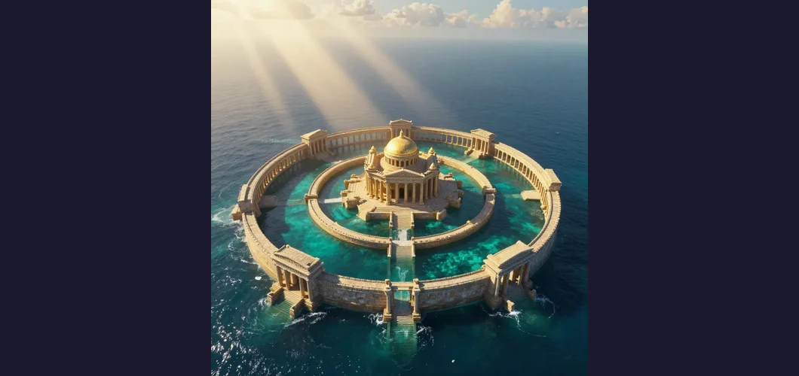
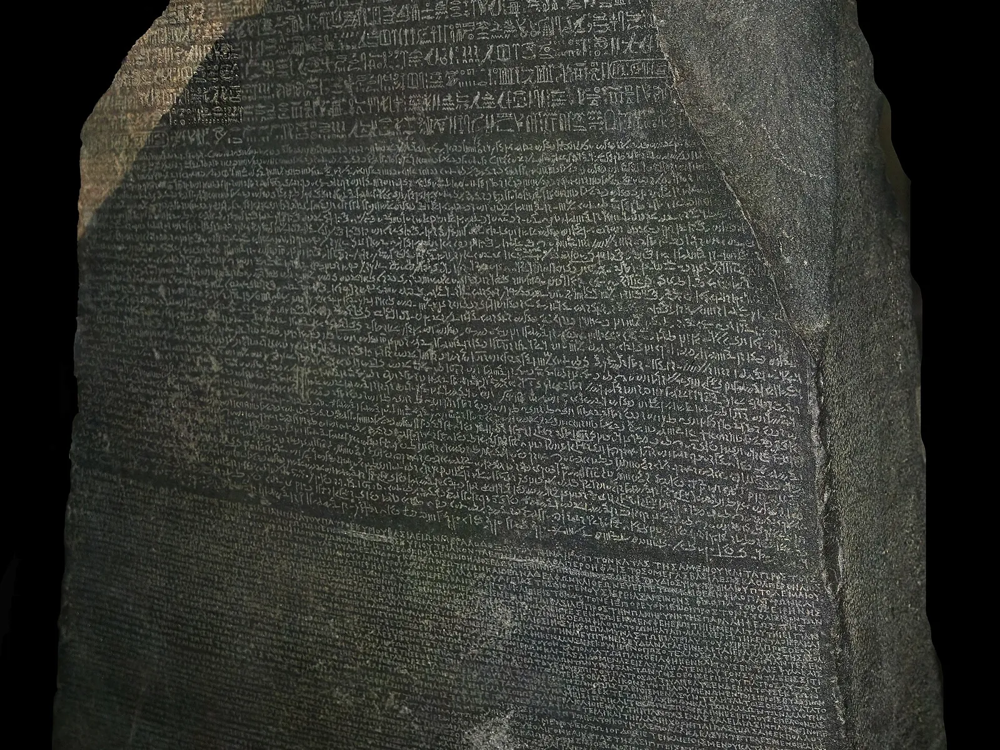
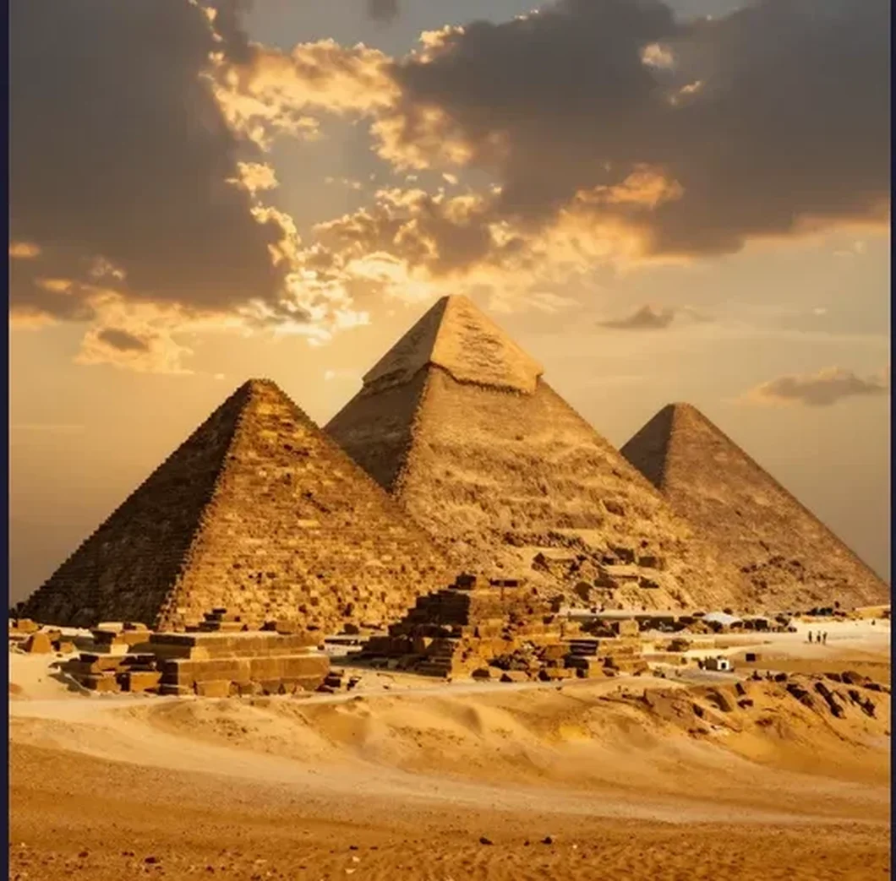
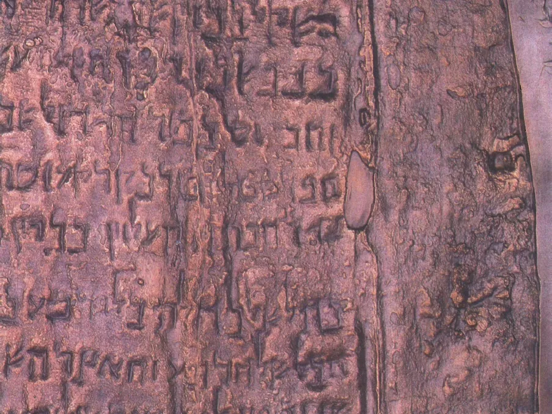
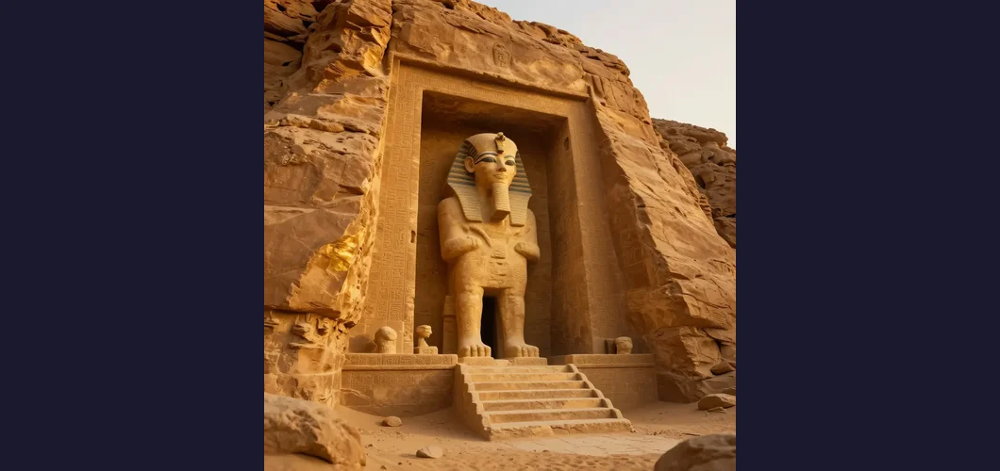

Ancient Mysteries

The Lost City of Atlantis: Plato’s Ancient Story of Pride and Disaster

The Nazca Lines: Ancient Desert Drawings That Are Best Seen From the Sky

The Baghdad Battery: Did Ancient Civilizations Discover Electricity 1,500 Years Early?

The Moai of Easter Island: How Did the Rapa Nui Move About 900 Giant Stone Statues?

The Great Sphinx of Giza: Secrets of Egypt’s Giant Stone Guardian

The Library of Alexandria: The Most Famous Library of the Ancient World

The Antikythera Mechanism: An Ancient Greek Computer 1,500 Years Ahead of Its Time

The Curse of Tutankhamun: Myth, Media, and the Science Behind Egypt's Most Famous Legend

Angkor Wat: The Largest Religious Monument Ever Built and the City That Vanished

The Fall of the Minoans: How Earth's Biggest Eruption Toppled a Civilization

The Yonaguni Monument: Japan's Underwater Mystery

The Lost Tomb of Alexander the Great: The Greatest Archaeological Mystery of the Ancient World

Ark of the Covenant: The Golden Chest That Contained God's Power and Vanished Without a Trace

Rosetta Stone: How One Broken Slab Unlocked 3,000 Years of Lost Egyptian History

Dead Sea Scrolls: The 2,000-Year-Old Texts That Changed What We Know About the Bible

Pompeii: The City Frozen in Ash for 1,700 Years That Changed How We See Ancient Rome

Machu Picchu: The Lost Citadel of the Incas That Was Never Really Lost

The Pyramids of Giza: 4,500 Years Later, We Still Cannot Fully Explain How They Were Built

Stonehenge: The Ancient Monument That Still Defies Explanation

Cleopatra's Lost Tomb: Where Is Egypt's Last Queen Buried?

Derinkuyu Underground City: Up to 20,000 People May Have Sheltered Beneath Turkey

Sacsayhuamán: The Inca Fortress Built With Impossible Stones

The Copper Scroll Treasure: The World's Oldest Treasure Map and Billions in Hidden Gold

The Saqqara Bird: Did Ancient Egyptians Understand Flight?

The Roman Dodecahedron: Ancient Mystery That Still Baffles Experts

Thutmose II Tomb: The Lost Pharaoh Found

The Lost City of Heracleion: An Ancient Egyptian Metropolis Hidden Beneath the Sea for 1,200 Years

The Terracotta Army: 8,000 Clay Warriors Guarding China’s First Emperor

Göbekli Tepe: The World's Oldest Temple and the Mystery of Who Built It